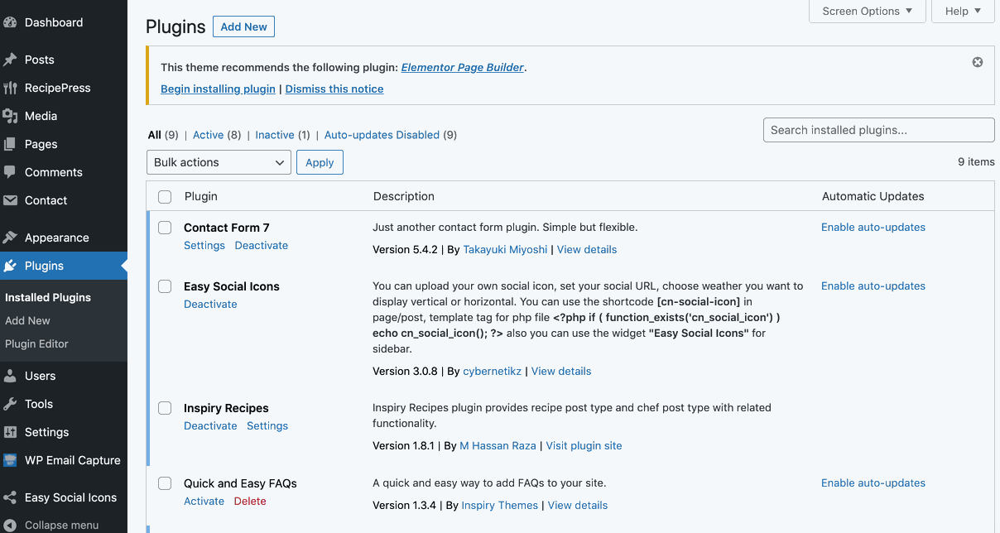
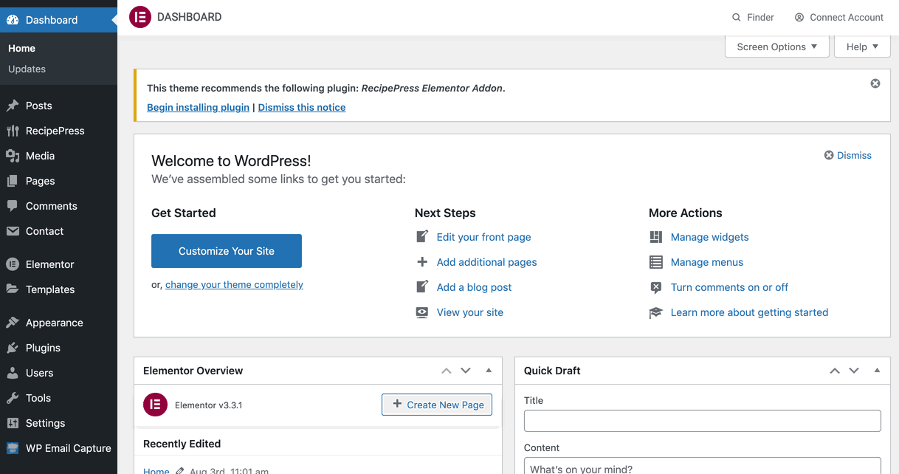

Introduction to Elementor
Elementor is the ultimate and FREE WordPress page builder plugin, which lets you create beautiful pages in the easiest and quickest way possible.
Elementor Page Builder Plugin Installation
If you have activated all the required plugins during theme installation the Elementor Page Builder plugin was installed already. If not, then follow the steps below.
Navigate to Dashboard → Plugins → Add New and find Elementor Page Builder.
Once found, Install and Activate it.
After installing and activating the Elementor Page Builder plugin you need to install the RecipePress Elementor Addon plugin that will enable you to use the theme specific widgets. Go to Dashboard → Appearance → Install Plugins and install and activate RecipePress Elementor Addon plugin.

Elementor with RecipePress Theme
RecipePress provide Elementor support and includes several useful widgets (via RecipePress Elementor Addon plugin) that you can use to build custom pages based on Elementor page builder.
RecipePress also includes pre built Elementor based demo import that you can use to quickly get started on your project. RecipePress Elementor Addon can be installed via Dashboard → Appearance → Install Plugins section.

All the newly available widgets have self explanatory options that you can use according to your needs.